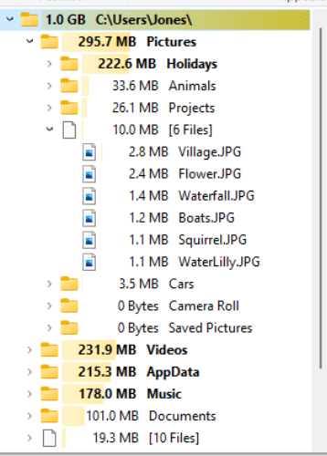

The blazing-fast, offline Windows storage analyzer, smart file explorer, and wireless transfer hub designed to run smoothly on any PC — from 4GB budget laptops to 32GB workstations.

Everything You Need To Free Up Space & Manage Storage.
Equipped with our non-blocking, stack-based traversal engine. Prioritizes currently visible folders to calculate consumption in milliseconds without freezing your UI.
Plug in your Android phone, iPhone, iPad, or tablet via USB. StorageFlow seamlessly browses internal storage and SD cards with safe local file extraction.
Share heavy videos, photos, and files between your PC and mobile devices over high-speed local Wi-Fi. Just scan a QR code — zero internet or cables needed.
Live monitoring of NVMe SSDs, SATA drives, and HDDs. View read/write speeds, available storage headroom, CPU cores, RAM consumption, and battery metrics.
Your files and directories never leave your machine. StorageFlow operates in 100% isolated offline mode with no analytics, tracking, or cloud servers.
Automatically selects Low-End Mode, Balanced Mode, or High-Performance Mode based on your RAM and CPU cores to ensure maximum fluidity and battery efficiency.
Built with Windows 11 Glassmorphism.
Explore the actual screens and workflows of StorageFlow 2.0.
Fine-Tuned For Every Generation of PC
| Hardware Profile | Specifications | App Mode | Target Performance |
|---|---|---|---|
| Profile A (Budget) | 4 GB RAM, Dual-Core CPU, HDD / SATA | Low-End Mode | < 90 MB Idle RAM, Zero UI Lag |
| Profile B (Mid-Range) | 8 GB RAM, Quad-Core CPU, SATA SSD | Balanced Mode | Instant Search, Smooth Transitions |
| Profile C (Modern) | 16 GB RAM, 6-Core+ CPU, NVMe SSD | High-Performance | 12-Thread Parallel Scanning |
| Profile D (Workstation) | 32 GB+ RAM, Dedicated GPU, Gen4 NVMe | Extreme Performance | Instant Multi-Million File Indexing |
Got Questions? We've Got Answers.
No! StorageFlow is built from the ground up to be 100% offline. There are zero background network requests, no analytics pings, and no cloud servers. All drive analysis and file transfers happen entirely on your local machine and local Wi-Fi.
StorageFlow spins up a secure local HTTP streaming server on your PC's Wi-Fi adapter. When you scan the QR code with your phone or tablet, your mobile device connects directly to your PC via peer-to-peer local network transfer at wire speed.
StorageFlow 2.0 natively supports Windows 10 (64-bit, Version 1903+) and all versions of Windows 11. It supports 100%, 125%, 150%, and 200% DPI scaling gracefully.
Yes! StorageFlow is 100% free and open-source. You can download the binary installer or build it yourself directly from the GitHub repository.
Download StorageFlow 2.0 today and experience modern, offline Windows storage management.